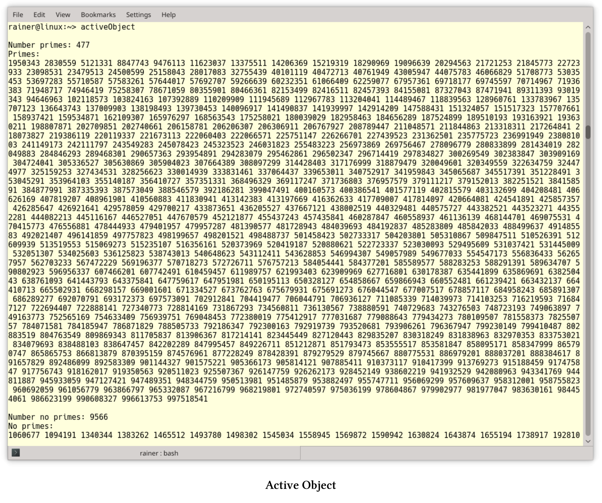

活动对象
活动对象模式将执行与对象的成员函数解耦，每个对象会留在在自己的控制线程中。其目标是通过使用异步方法，处理调度器的请求，从而触发并发。维基百科：Active object。所以，这种模式也称为并发对象模式。
客户端的调用会转到代理，代理表现为活动对象的接口。服务提供活动对象的实现，并在单独的线程中运行。代理在运行时将客户端的调用转换为对服务的调用，调度程序将方法加入到激活列表中。调度器与服务在相同的线程中活动，并将方法调用从激活列表中取出，再将它们分派到相应的服务上。最后，客户端可以通过future从代理处获取最终的结果。
组件
活动对象模式由六个组件组成:
- 代理为活动对象的可访问方法提供接口。代理将触发激活列表的方法，并请求对象的构造。并且，代理和客户端运行在相同的线程中。
- 方法请求类定义了执行活动对象的接口。
- 激活列表的目标是维护挂起的请求，激活列表将客户端线程与活动对象线程解耦。代理对入队请求的进行处理，而调度器将请求移出队列。
- 调度器与代理可在不同的线程中运行。调度器会在活动对象的线程中运行，并决定接下来执行激活列表中的哪个请求。
- 可以通过服务实现活动对象，并在活动对象的线程中运行，服务也支持代理接口。
- future是由代理创造的，客户端可以从future上获取活动对象调用的结果。客户端可以安静等待结果，也可以对结果进行轮询。
下面的图片显示了消息的顺序。
代理
代理设计模式是《设计模式:可重用的面向对象软件的元素》中的经典模式，代理是其他对象的代表。典型的代理可以是远程代理CORBA、安全代理、虚拟代理或智能指针，如
std::shared_ptr。每个代理会为它所代表的对象添加额外的功能。远程代理代表远程对象，并使客户端产生本地对象的错觉。安全代理通过对数据进行加密和解密，将不安全的连接转换为安全的连接。虚拟代理以惰性的方式封装对象的创建，智能指针将接管底层内存的生存期。
- 代理具有与RealSubject相同的接口，用于管理引用，还有subject的生命周期。
- 与Subject具有相同的接口，如代理和RealSubject。
- RealSubject用于提供具体的功能。
关于代理模式的更多细节，可以参考Wikipedia页面。
优点和缺点
介绍Active Object模式的最小实现前，先了解一下它的优点和缺点。
- 优点:
- 同步只需要在活动对象的线程上进行，不需要在客户端的线程上进行。
- 客户端(用户)和服务器(实现者)之间的解耦，同步的挑战则在实现者的一边。
- 由于客户端为异步请求，所以系统的吞吐量提高了，从而调用处理密集型方法不会阻塞整个系统。
- 调度器可以实现各种策略来执行挂起请求，因此可以按不同的顺序执行入队请求。
- 缺点:
- 如果请求的粒度太细，则活动对象模式(如代理、激活列表和调度器)的性能开销可能过大。
- 由于调度器的调度策略和操作系统的调度互相影响，调试活动对象模式通常非常困难，尤其是以不同顺序执行请求的情况下。
具体实现
下面的示例展示了活动对象模式的简单实现。我没有定义一个请求，这应该由代理和服务实现。而且，当请求调度程序执行下一个请求时，服务应该只执行这个请求。
所涉及的类型为future<vector<future<pair<bool, int>>>>，这个类型的标识有点长。为了提高可读性，我使用了声明(第16 - 37行)。
// activeObject.cpp
#include <algorithm>
#include <deque>
#include <functional>
#include <future>
#include <iostream>
#include <memory>
#include <mutex>
#include <numeric>
#include <random>
#include <thread>
#include <utility>
#include <vector>
using std::async;
using std::boolalpha;
using std::cout;
using std::deque;
using std::distance;
using std::endl;
using std::for_each;
using std::find_if;
using std::future;
using std::lock_guard;
using std::make_move_iterator;
using std::make_pair;
using std::move;
using std::mt19937;
using std::mutex;
using std::packaged_task;
using std::pair;
using std::random_device;
using std::sort;
using std::thread;
using std::uniform_int_distribution;
using std::vector;
class IsPrime {
public:
pair<bool, int> operator()(int i) {
for (int j = 2; j * j <= i; ++j) {
if (i % j == 0)return std::make_pair(false, i);
}
return std::make_pair(true, i);
}
};
class ActivaeObject {
public:
future<pair<bool, int>> enqueueTask(int i) {
IsPrime isPrime;
packaged_task<pair<bool, int>(int)> newJob(isPrime);
auto isPrimeFuture = newJob.get_future();
auto pair = make_pair(move(newJob), i);
{
lock_guard<mutex> lockGuard(activationListMutex);
activationList.push_back(move(pair));
}
return isPrimeFuture;
}
void run() {
thread servant([this] {
while (!isEmpty()) {
auto myTask = dequeueTask();
myTask.first(myTask.second);
}
});
servant.join();
}
private:
pair<packaged_task<pair<bool, int>(int)>, int> dequeueTask() {
lock_guard<mutex> lockGuard(activationListMutex);
auto myTask = std::move(activationList.front());
activationList.pop_front();
return myTask;
}
bool isEmpty() {
lock_guard<mutex> lockGuard(activationListMutex);
auto empty = activationList.empty();
return empty;
}
deque<pair<packaged_task<pair<bool, int>(int)>, int >> activationList;
mutex activationListMutex;
};
vector<int> getRandNumber(int number) {
random_device seed;
mt19937 engine(seed());
uniform_int_distribution<> dist(1000000, 1000000000);
vector<int> numbers;
for (long long i = 0; i < number; ++i) numbers.push_back(dist(engine));
return numbers;
}
future<vector<future<pair<bool, int>>>> getFutures(ActivaeObject& activeObject,
int numberPrimes) {
return async([&activeObject, numberPrimes] {
vector<future<pair<bool, int>>> futures;
auto randNumbers = getRandNumber(numberPrimes);
for (auto numb : randNumbers) {
futures.push_back(activeObject.enqueueTask(numb));
}
return futures;
});
}
int main() {
cout << boolalpha << endl;
ActivaeObject activeObject;
// a few clients enqueue work concurrently
auto client1 = getFutures(activeObject, 1998);
auto client2 = getFutures(activeObject, 2003);
auto client3 = getFutures(activeObject, 2011);
auto client4 = getFutures(activeObject, 2014);
auto client5 = getFutures(activeObject, 2017);
// give me the futures
auto futures = client1.get();
auto futures2 = client2.get();
auto futures3 = client3.get();
auto futures4 = client4.get();
auto futures5 = client5.get();
// put all futures together
futures.insert(futures.end(), make_move_iterator(futures2.begin()),
make_move_iterator(futures2.end()));
futures.insert(futures.end(), make_move_iterator(futures3.begin()),
make_move_iterator(futures3.end()));
futures.insert(futures.end(), make_move_iterator(futures4.begin()),
make_move_iterator(futures4.end()));
futures.insert(futures.end(), make_move_iterator(futures5.begin()),
make_move_iterator(futures5.end()));
// run the promises
activeObject.run();
// get the results from the futures
vector<pair<bool, int>> futResults;
futResults.reserve(futResults.size());
for (auto& fut : futures)futResults.push_back(fut.get());
sort(futResults.begin(), futResults.end());
// separate the primes from the non-primes
auto prIt = find_if(futResults.begin(), futResults.end(),
[](pair<bool, int>pa) {return pa.first == true; });
cout << "Number primes: " << distance(prIt, futResults.end()) << endl;
cout << "Primes: " << endl;
for_each(prIt, futResults.end(), [](auto p) {cout << p.second << " "; });
cout << "\n\n";
cout << "Number no primes: " << distance(futResults.begin(), prIt) << endl;
cout << "No primes: " << endl;
for_each(futResults.begin(), prIt, [](auto p) {cout << p.second << " "; });
cout << endl;
}
示例的基本思想是，客户端可以在激活列表上并发地安排作业。线程的工作是确定哪些数是质数。激活列表是活动对象的一部分，而活动对象在一个单独的线程上进行入队操作，并且客户端可以在激活列表中查询作业的结果。
程序的详情：5个客户端通过getFutures将工作(第121 - 126行)入队到activeObject。numberPrimes中的数字是1000000到1000000000之间(第96行)的随机数，将这些数值放入vector<future<pair<bool, int>> 中。future<pair<bool, int>持有一个bool和int对，其中bool表示int值是否是质数。再看看第108行：future .push_back(activeObject.enqueueTask(numb))。此调用将触发新作业进入激活列表的队列，所有对激活列表的调用都必须受到保护，这里激活列表是一个promise队列(第89行)：deque<pair<packaged_task<pair<bool, int>(int)>, int >> 。
每个promise在调用执行函数对象IsPrime(第39 - 47行)时，会返回一个bool和int对。现在，工作包已经准备好了，开始计算吧。所有客户端在第129 - 133行中返回关联future的句柄，并把所有的future放在一起(第136 - 146行)，这样会使工作更加容易。第149行中的调用activeObject.run()启动执行。run(第64 - 72行)启动单独的线程，并执行promises(第68行)，直到执行完所有作业(第66行)。isEmpty(第83 - 87行)确定队列是否为空，dequeTask会返回一个新任务。通过在每个future上调用futResults.push_back(fut.get())(第154行)，所有结果都会推送到futResults上。第156行对成对的向量进行排序:vector<pair<bool, int>>。其余代码则是给出了计算结果，第159行中的迭代器prIt将第一个迭代器指向一个素数对。
程序打印素数数量为distance(prIt, futResults.end())(第162行)，并(第164行)逐一显示。
